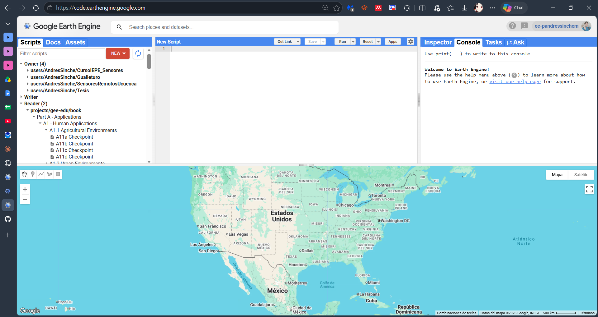
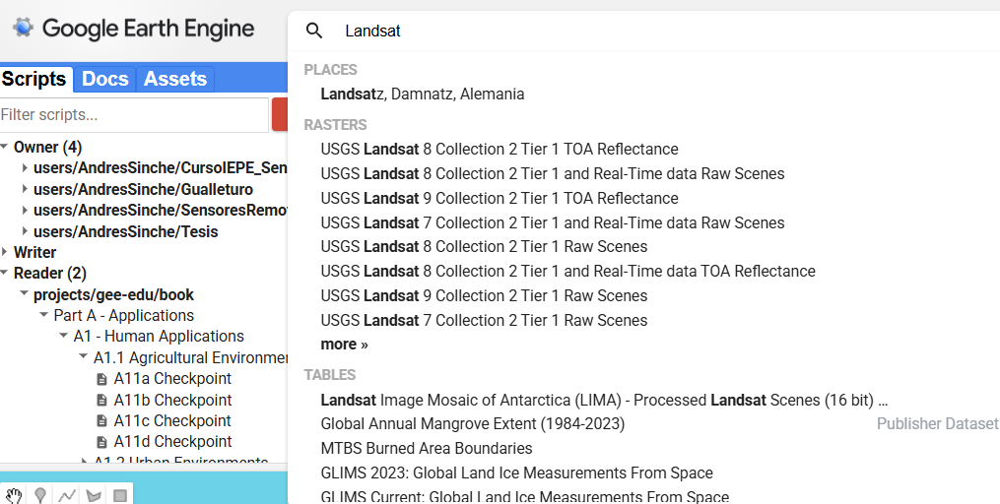

Exploración de la plataforma, búsqueda de datos satelitales y un primer ejercicio de composición de bandas con imágenes Landsat 8.
Google Earth Engine (GEE) es una plataforma de procesamiento geoespacial en la nube que combina un catálogo público de imágenes satelitales (Landsat, Sentinel, MODIS, entre otros) con un entorno de programación (JavaScript o Python) para analizarlas sin necesidad de descargarlas previamente. Esto es especialmente útil en teledetección, donde una sola escena puede pesar cientos de megabytes y un análisis multitemporal puede requerir decenas o cientos de imágenes.
Al entrar a code.earthengine.google.com encontramos cinco paneles principales:

Scripts: guarda y organiza tus códigos en un repositorio propio.
Docs: documentación de cada función disponible en la API.
Assets: tus propios archivos subidos (shapefiles, imágenes, tablas).
Editor de código: donde se escribe el script en JavaScript.
Mapa: en la parte inferior, muestra las capas que agregamos con Map.addLayer().
Console: muestra los resultados de print() y los mensajes de error.
Inspector: permite hacer clic sobre el mapa para ver los valores de píxel en ese punto.
Buscador del catálogo de datos, botón Run para ejecutar el script, y el botón Get Link para compartir el código con otra persona.
El catálogo de datos (Data Catalog, accesible desde el buscador en la parte superior) permite encontrar colecciones satelitales por nombre, sensor o tema. Cada colección tiene un identificador único que se usa en el código, por ejemplo:

Identificador de colección'LANDSAT/LC08/C02/T1_RT_TOA'
Ese identificador corresponde a las imágenes Landsat 8, Colección 2, Nivel 1 (Top of Atmosphere), en tiempo casi real. La ficha de cada colección en el catálogo indica, entre otras cosas: el rango de fechas disponible, la resolución espacial, y el nombre y número de cada banda espectral — información indispensable antes de construir cualquier composición de bandas.
Una vez cargada la colección, se puede acotar con tres filtros muy comunes:
| Función | Qué hace |
|---|---|
| .filterBounds(geometry) | Conserva solo las imágenes que intersectan el área de estudio. |
| .filterDate('2017-01-01','2017-12-31') | Conserva solo las imágenes dentro de ese rango de fechas. |
| .filter(ee.Filter.lt('CLOUD_COVER', 30)) | Descarta las imágenes con más de 30% de nubosidad. |
Una imagen Landsat 8 contiene varias bandas espectrales, cada una sensible a una porción distinta del espectro electromagnético. Una "composición de bandas" consiste en asignar tres bandas a los canales Rojo, Verde y Azul (RGB) de la pantalla para resaltar un tipo de información específico. La siguiente tabla resume las combinaciones que trabajaremos hoy:
| Composición | Bandas (R-G-B) | Resalta |
|---|---|---|
| Color real (432) | B4 - B3 - B2 | Lo que vería el ojo humano: suelo, agua y vegetación en sus colores naturales. |
| Color falso (543) | B5 - B4 - B3 | Vegetación en tonos rojos/rosados; muy sensible a la densidad foliar. |
| Uso agrícola (652) | B6 - B5 - B2 | Diferencia cultivos y suelo desnudo; útil para delimitar parcelas. |
| Vegetación vigorosa (562) | B5 - B6 - B2 | Vegetación sana en verde brillante; ayuda a distinguir su estado fenológico. |
| Urbano (764) | B7 - B6 - B4 | Superficies construidas y suelo desnudo, en tonos magenta/violeta. |
| Penetración atmosférica (765) | B7 - B6 - B5 | Reduce el efecto de neblina y aerosoles atmosféricos. |
NDVI
Índice de Vegetación de Diferencia Normalizada. Usa las bandas NIR (B5) y Rojo (B4):
NDVI = (NIR − Red) / (NIR + Red)Valores cercanos a 1 indican vegetación densa y saludable; valores cercanos a 0 o negativos corresponden a suelo desnudo, agua o superficies construidas.
NDWI
En este ejercicio se calcula con las bandas NIR (B5) y SWIR2 (B7), siguiendo la formulación de Gao (1996):
NDWI = (NIR − SWIR) / (NIR + SWIR)Este índice es sensible al contenido de humedad en la vegetación y el suelo. No debe confundirse con el índice de McFeeters (que usa Verde y NIR) para delimitar cuerpos de agua abiertos.
Este es el código que usaremos como base. Antes de ejecutarlo, deben dibujar manualmente una geometría (geometry) sobre su área de estudio en el mapa del Code Editor, usando la herramienta de polígono o rectángulo de la barra superior izquierda del mapa.
////////////////////////////Combinación de Bandas//////////////////////////////
//Creamos un dataset con la colección de imágenes del Landsat 8
var dataset = ee.ImageCollection('LANDSAT/LC08/C02/T1_RT_TOA')
.filterBounds(geometry)
.filterDate('2017-01-01', '2017-12-31')
.filter(ee.Filter.lt('CLOUD_COVER', 30))
;
//Creamos variables de acuerdo a la combinación de bandas
var TrueColor432 =
dataset.select(['B4', 'B3', 'B2']); //Color Real 432
var FalseColor543 =
dataset.select(['B5', 'B4', 'B3']); //Color Falso 543
var AgroUse652 =
dataset.select(['B6', 'B5', 'B2']); //Uso Agrícola 652
var VigVeg562 =
dataset.select(['B5', 'B6', 'B2']); //Vegetación Vigorosa 562
var Urban764 =
dataset.select(['B7', 'B6', 'B4']); //Urbano 764
var Atmospheric765 =
dataset.select(['B7', 'B6', 'B5']); //Penetración Atmosférica 765
var nirRedImage =
dataset.select(['B5', 'B4']); //Índice de Vegetación
var nirSwirImage =
dataset.select(['B5', 'B7']); //Índice de Agua Normalizado
// Función para calcular el NDVI
var calculateNDVI = function(image) {
var nir = image.select('B5');
var red = image.select('B4');
var ndvi = nir.subtract(red).divide(nir.add(red)).rename('NDVI');
return image.addBands(ndvi);
};
// Función para calcular el NDWI
var calculateNDWI = function(image) {
var nir = image.select('B5');
var swir = image.select('B7');
var ndwi = nir.subtract(swir).divide(nir.add(swir)).rename('NDWI');
return image.addBands(ndwi);
};
// Aplicamos la función a cada imagen de la colección NDVI
var ndviCollection = nirRedImage.map(calculateNDVI);
// Aplicamos la función a cada imagen de la colección
var ndwiCollection = nirSwirImage.map(calculateNDWI);
//Especificamos parámetros de visualización
var ColorVis = {
min: 0.0,
max: 0.4,
};
// Especificamos parámetros de visualización para indicadores
var IndiceVis = {
min: -1,
max: 1,
palette: ['blue', 'white', 'green']
};
//Creamos una imagen mejorada
var medianCompositeTC = TrueColor432.median();
var medianCompositeFC = FalseColor543.median();
var medianCompositeAU = AgroUse652.median();
var medianCompositeVV = VigVeg562.median();
var medianCompositeUR = Urban764.median();
var medianCompositeAT = Atmospheric765.median();
var medianCompositeNDVI = ee.Image(ndviCollection.median());
var medianCompositeNDWI = ee.Image(ndwiCollection.median());
//Agregamos las capas creadas
Map.addLayer(medianCompositeTC, ColorVis, 'True Color (432)', 0);
Map.addLayer(medianCompositeFC, ColorVis, 'False Color (543)', 0);
Map.addLayer(medianCompositeAU, ColorVis, 'Agricultural Use (652)', 0);
Map.addLayer(medianCompositeVV, ColorVis, 'Vigorous Vegetation (562)', 0);
Map.addLayer(medianCompositeUR, ColorVis, 'Urbano (764)', 0);
Map.addLayer(medianCompositeAT, ColorVis, 'Penetracion Atmosférica (765)', 0);
Map.addLayer(medianCompositeNDVI.select('NDVI'), IndiceVis, 'NDVI', 0);
Map.addLayer(medianCompositeNDWI.select('NDWI'), IndiceVis, 'NDWI', 0);
//Centramos las capas creadas
Map.centerObject(geometry, 5.5);
//Agregamos información relevante al proyecto
print('Metadatos', dataset);
print('Cantidad de fotos ', dataset.size());Al finalizar la práctica, cada estudiante debe entregar un control de lectura en el repositorio de la ayudantía documentando lo siguiente: